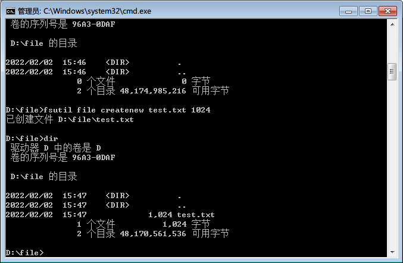
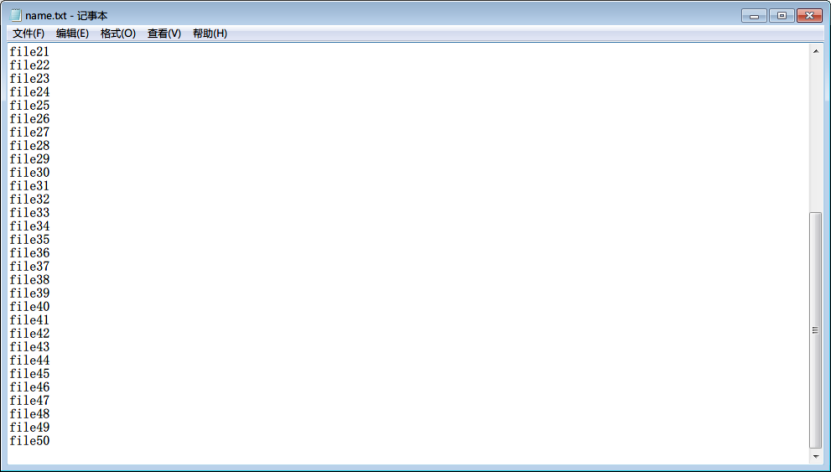
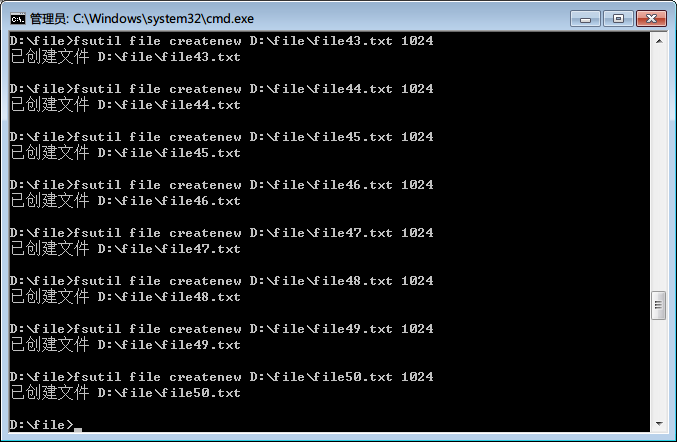
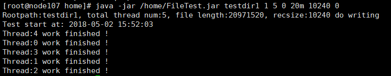

在做测试的过程中经常会有需要准备各种大小的文件作为测试数据，一般在文件系统相关的测试中会用到，普通的网页里面涉及上传文件功能的也需要准备一些文件去进行单个功能测试或者批量性能测试。那么该如何简单快速地去创建指定大小的文件，批量生成文件在windows或这linux系统的指定目录下呢？
下面我将把我这几天get到的小技能记录分享一下=￣ω￣=
Windows下生成文件：
生成单个指定大小的文件
进入想要生成文件的文件夹，在地址栏输入cmd后回车，或者快捷键win+r进入dos命令窗口，输入以下命令：
fsutil file createnew test.txt 1024
其中，test.txt是生成文件的文件名，1024是文件大小，单位是字节，例如1024就是1kB，1048576就是1M了。如果dos命令执行时不是生成文件的路径，只需要在文件名前加上路径即可。

批量生成指定大小的文件
如果需要批量生成很多指定大小的文件，我们可以先设计好文件名，如果是递增数列或是其他有规律的命名方式，可以现在excel中写，然后拖动生成名字后复制到txt文本中，在脚本命令中进行读取，再结合上面的命令就好了：
for /f %i in (name.txt) do fsutil file createnew D:\file\%i.txt 1024
其中name.txt（可以用Excel批量生成需要的文件名复制到txt中）是我存放生成文件的文件名的文本，我将生成的文件存放在D:\file\中，执行结果如下：


这样去对应的文件夹里面就可以看到生成的文件了。
Linux下生成文件：
如果测试环境是后端的Linux系统，需要准备一定量指定大小的数据，结合Linux命令应该会有很多的方法，但是需要批量生成我查阅了很多方法，脚本都比较的复制，对于小白来说理解上有一定困难，脚本也不易保存，我这边就提供一个jar包，可以直接调用：（csdn不能直接上传附件，所以我把这个jar包上传到资源共享里面了：点我进入下载页面）
我们先java -jar加上jar包名看一下帮助信息：
一共有那么几个参数，我结合我的理解来简单解释一下：
rootpath：用于存放生成文件的目录地址
rwtpyte：操作的参数设置，1为写文件，2 为读文件，如果是生成指定大小的文件，则是用1
threadnum：文件的数量设置
postfix：文件名的一个起始变量设置，如果只是批量执行一次，这个参数用默认的0就好了，多次执行可以设置其他数字进行区分，具体的用法可以自己尝试几遍就能够理解了
file_len：单个文件的大小设置，后面可以加单位：k，m，g，t
recsize：各个io的读取数据量，一般默认用10240，单位默认是字节
sync：是否同步，默认是用0
搞清楚了参数是怎么回事，我们就可以来尝试一下了~
举个栗子吧，假设我们需要在testdir1这个 文件夹下创建5个大小为20M的文件，我们就可以这么写：
java -jar /home/FileTest.jar testdir1 1 5 0 20m 10240 0
执行结果是这样的，就表示成功了：

如果不放心可以进入testdir1这个目录，然后ll -h查看检查一下看看是不是有5个大小为20M的文件：

这样就和期望结果一致了~